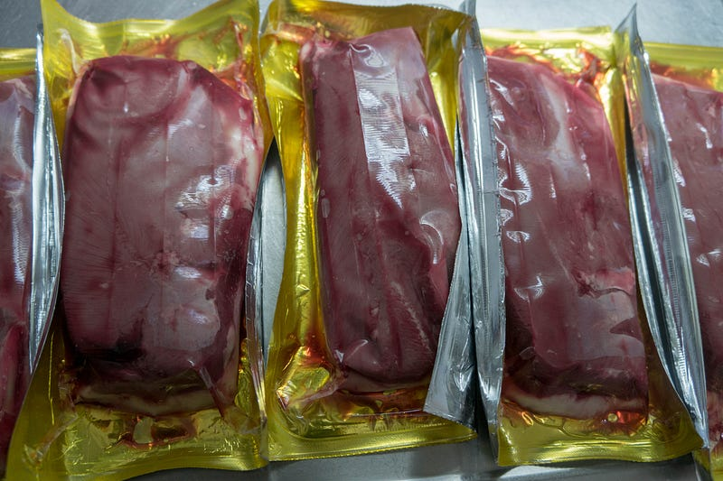
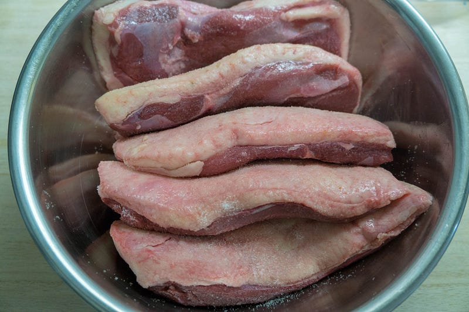
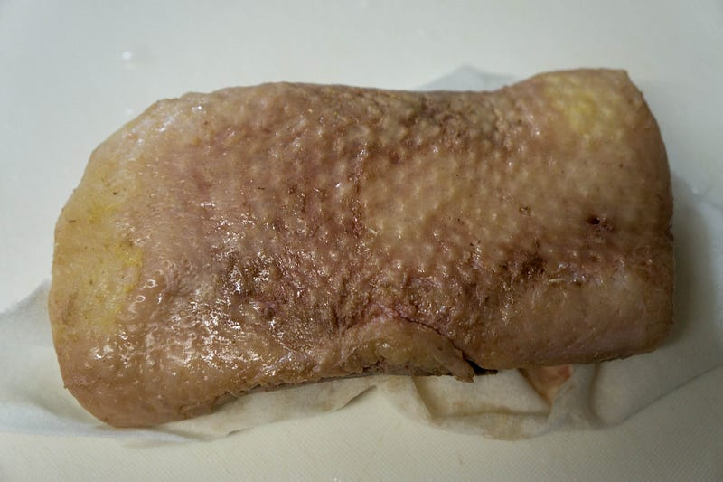
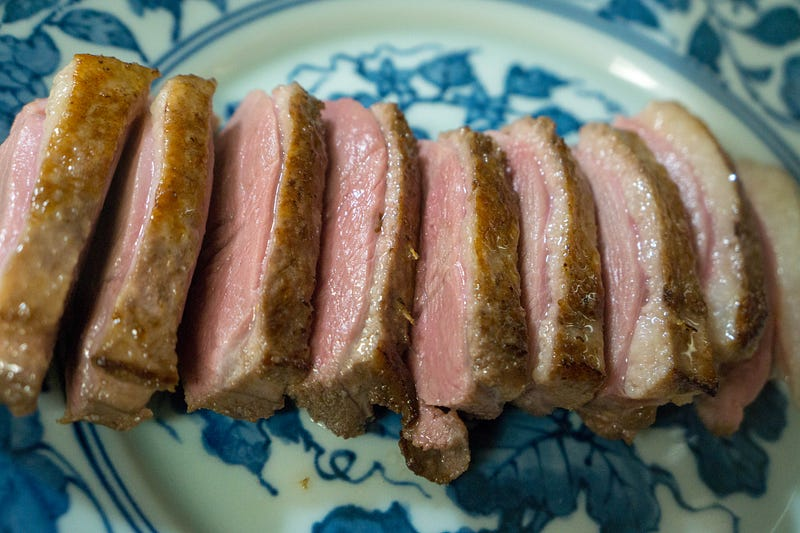
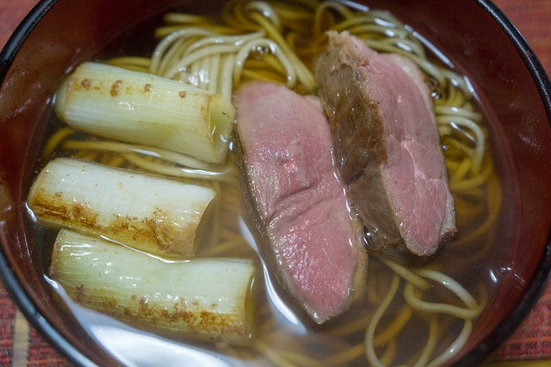
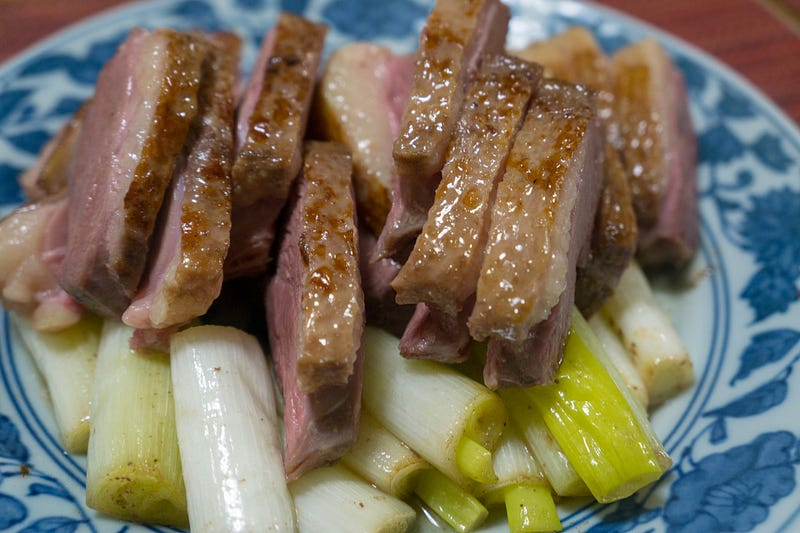

anovaで低温調理鴨を焼き、ついでに鴨南蛮を作る
anovaで低温調理鴨を焼き、ついでに鴨南蛮を作る
以前やった低温調理肉会では鴨は焼いたが、自分は焼いてばかりでほとんど食べられなかった。1年の終わりにしっかり食べたい。やるぞ！
小林銅蟲の「めしにしましょう」愛読者の皆様に「低温調理」「鴨南蛮」というとすぐに鴨で埋まった丼を思い浮かべるかもしれませんが、今宵大晦日に作るのは極々普通の鴨南蛮です。
まず昨晩のうちに仕込んでおきます。鴨胸肉1kgくらいですね。
鴨 ブレスト (マグレカナール) 300g前後
商品説明 日本では合鴨と呼ばれているマグレカナール種のロース肉です。 味が繊細で、特に脂は甘みを感じさせるほどの味とコクがあり、日本料理に特に適しています。 脂身と赤身のバランスがよく、肉質も柔らかいのが特徴です。 召し上がり方 煮込み…www.themeatguy.jp
商品説明 日本では合鴨と呼ばれているマグレカナール種のロース肉です。 味が繊細で、特に脂は甘みを感じさせるほどの味とコクがあり、日本料理に特に適しています。 脂身と赤身のバランスがよく、肉質も柔らかいのが特徴です。 召し上がり方 煮込み…www.themeatguy.jp

水気を拭いておいて、塩をして、58℃で4時間。すこーし羽が残ってることがあるので注意。

低温調理が終わったら、急速冷蔵して、冷蔵庫へ。
食べる直前に30分〜1時間くらいかけて58℃に戻します。

何回見ても低温調理直後の肉は美味しそうに見えない。
でもこれを皮目を下にして、5分くらい弱火〜中火で焼いて、切るとこうなる。

むふふふふ〜〜〜〜。焼くと化けますね！！！！
ついでにこの鴨から出た油で葱を弱火で炒めて、蕎麦にのっけるとこうなります。

おしまい。
じゃなくて、1kg持って来たんだけど、その半分強の600gちょいやったのでもっといっぱいあるんですよ！

鴨南蛮はこの肉と葱をビールでちょいちょいやったあと、残った鴨と葱を入れて作ったのでした。なお、この素鴨ねぎはわさびをつけていただきました。もうしばらく鴨肉いらない（… と思ったけど、まだ2つ残ってるんだった）
そばつゆが充分に温かいと、鴨がそばつゆの熱でまた少し火が入って食感が変わるので最高です。
以上、これをもって2017年の低温調理の締めくくりとさせていただきたいと思います。良いお年を！